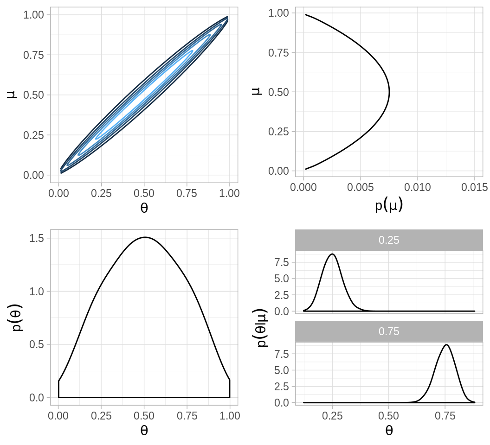
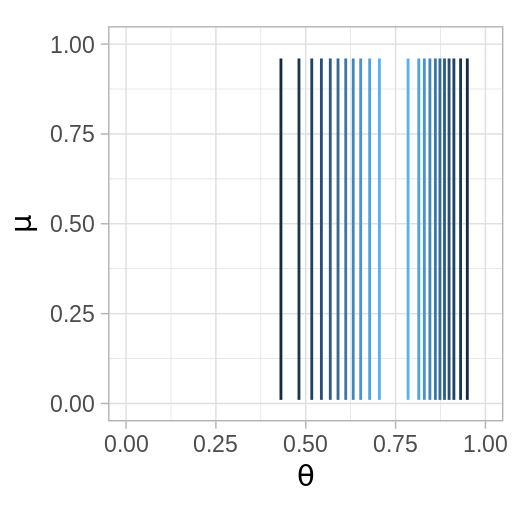
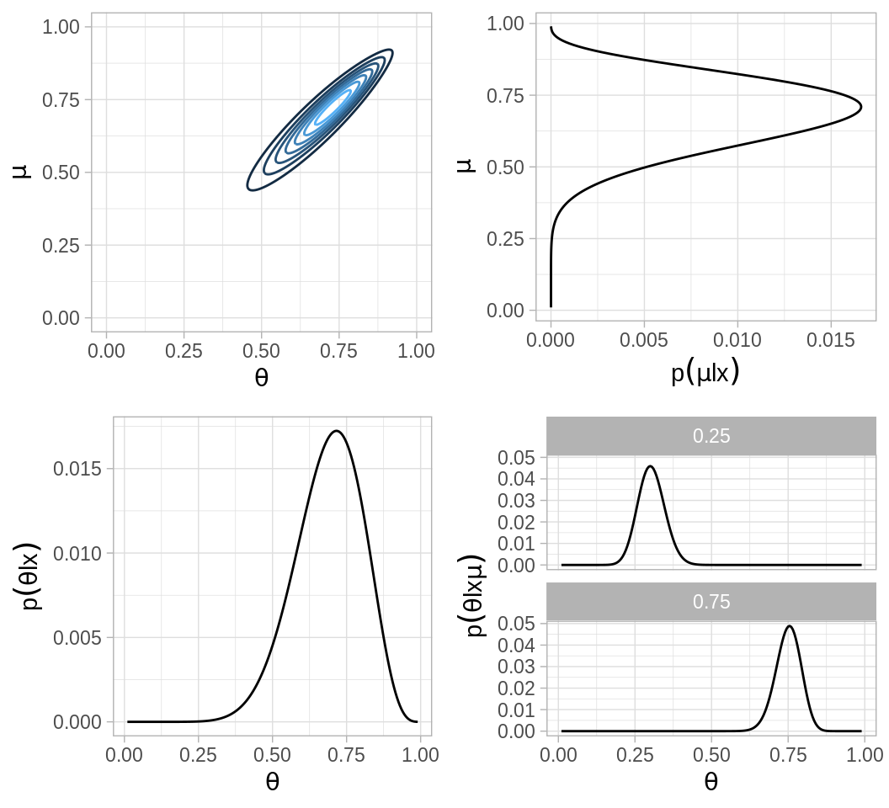
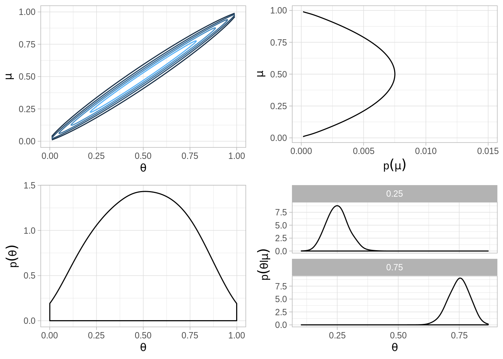
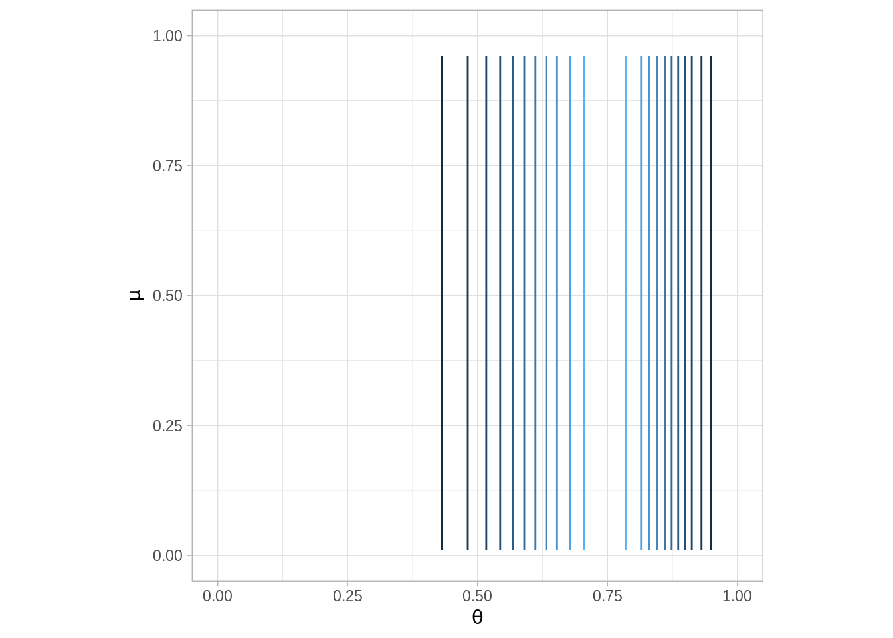
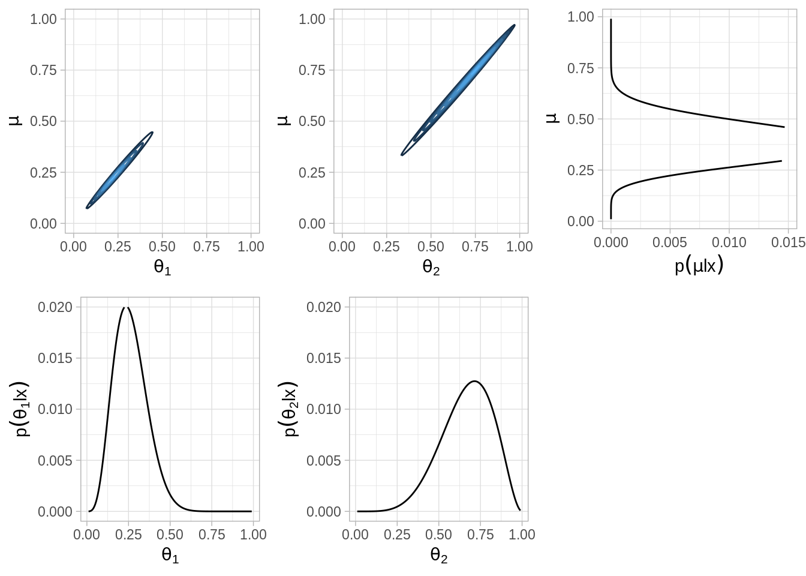

10.10 Modelos jerárquicos
Los modelos jerárquicos involucran varios parámetros de tal manera que las creencias de unos de los parámetros dependen de manera significativa de los valores de otros parámetros. Por ejemplo, consideremos el caso en el que tenemos varias monedas acuñadas en la misma casa de monedas, es razonable pensar que una fábrica sesgada a águilas tenderá a producir monedas con sesgo hacia águilas. La estimación del sesgo de una moneda depende de la estimación del sesgo de la fábrica que a su vez está influido por los datos de todas las monedas. Veremos que la estructura de dependenica a lo largo de los parámetros generan estimaciones mejor informadas para todos los parámetros.
Si pensamos únicamente en dos monedas que provienen de la misma casa de moneda tenemos:
Conocimientos iniciales de los posibles valores de los parámetros (sesgos de las monedas).
Tenemos conocimiento inicial de la dependencia de los parámetros por provenir de la misma fábrica.
Cuando observamos lanzamientos de las monedas actualizamos nuestras creencias relativas a los sesgos de las monedas y también actualizamos nuestras creencias acerca de la dependencia de los sesgos.
Recordemos el caso de lanzamientos de una moneda, le asignamos una inicial beta, recordemos que la distribución beta tienen dos parámetors \(a\) y \(b\):
\[p(\theta)=\frac{1}{B(a,b)}\theta^{a-1}(1-\theta)^{b-1}\]
Con el fin de hacer los parámetros más intuitivos los podemos expresar en términos de la media \(\mu\) y el tamaño de muestra \(K\), donde \(\mu\) es la media de nuestro conocimiento inicial y la confianza está reflejada en el tamaño de muestra \(K\). Entonces los parámetros correspondientes en la distribución beta son:
\[a=\mu K, b = (1-\mu)K\]
Ahora introducimos el modelo jerárquico. En lugar de especificar un valor particular para \(\mu\), consideramos que \(\mu\) puede tomar distintos valores (entre \(0\) y \(1\)), y definimos una distribución de probabilidad sobre esos valores. Podemos pensar que esta distribución describe nuestra incertidumbre acerca de la construcción de la máquina que manufactura las monedas.
Veamos que en el caso de más de una moneda el modelo permite que cada moneda tenga un sesgo distinto pero ambas tenderán a tener un sesgo cercano a \(\mu\), algunas aleatoriamente tendrán un valor de \(\theta\) mayor a \(\mu\) y otras menor. Entre más grande \(K\) mayor será la consistencia de la acuñadora y los valores \(\theta\) serán más cercanos a \(\mu\). Si observamos varios lanzamientos de una moneda tendremos información tanto de \(\theta\) como de \(\mu\).
Para hacer un análisis bayesiano aún nos hace falta definir la distribución inicial sobre los parámetros \(\mu\), usemos una distribución Beta:
\[p(\mu)=beta(\mu|A_{\mu}, B_{\mu})\]
donde \(A_{\mu}\) y \(B_{\mu}\) se conocen como hiperparámetros y son constantes. En este caso, consideramos que \(\mu\) se ubica típicamente cerca de \(A_{\mu}/(A_{\mu} + B_{\mu})\) y \(K\) se considera constante.
Modelo jerárquico una moneda
Recordemos que en el ejemplo de una moneda teníamos que la verosimilitud era Bernoulli:
\[p(x|theta) = \theta^x(1-\theta)^{1-x}\]
Y si utilizamos las iniciales Beta para \(\mu\) y \(\theta\) como discutimos arriba, solo nos resta aplicar la regla de Bayes con nuestros dos parámetros desconocidos \(\mu\) y \(\theta\):
\[p(\theta, \mu|x)=\frac{p(x|\theta,\mu)p(\theta,\mu)}{p(x)}\]
Hay dos aspectos a considerar en el problema:
La verosimilitud no depende de \(\mu\) por lo que \[p(x|\theta, \mu)=p(x|\theta)\]
La distribución inicial en el espacio de parámetros bivariado se puede factorizar:
\[p(\theta,\mu)=p(\theta|\mu)p(\mu)\]
Por lo tanto \[p(\theta,\mu|x)=\frac{p(x|\theta,\mu)p(\theta,\mu)}{p(x)}\] \[=\frac{p(x|\theta)p(\theta|\mu)p(\mu)}{p(x)}\] El siguiente modelo gráfico resume las independencias condicionales de la última ecuación:
Aproximación por cuadrícula
En el caso jerárquico, no se puede derivar la distribución posterior de manera
analítica pero si los parámetros e hiperparámetros toman un número finito de
valores y no hay muchos de ellos, podemos aproximar la posterior usando
aproximación por cuadrícula.
A continuación graficamos las distribuciones correspondientes al caso en que la distribución del hiperparámetro \(\mu\) tiene la forma de una distribución \(Beta(2, 2)\), es decir creemos que la media de la acuñadora \(\mu\) es \(0.5\), pero existe bastante incertidumbre acerca del valor.
La distribución de \(\theta\), esto es la distribución inicial que refleja la dependencia entre \(\theta\) y \(\mu\) se expresa por medio de otra distribución beta, en el ejemplo usamos \(K=100\):
\[\theta|\mu \sim beta(\mu 100, (1-\mu)100)\]
Esta inicial expresa un alto grado de certeza que una acuñadora con hiperparámetro \(\mu\) genera monedas con sesgo cercano a \(\mu\)

Verosimilitud.

Posterior.

A_mu <- 2; B_mu <- 2; K <- 100
# Distribución inicial conjunta p(theta, mu)
p_conjunta <- function(mu, theta, A_mu, B_mu, K){
# marginal p(mu)
p_mu <- dbeta(mu, A_mu, B_mu)
# condicional p(theta | mu)
p_theta_mu <- dbeta(theta, mu * K, (1 - mu) * K)
p_mu * p_theta_mu
}
grid <- expand.grid(theta = seq(0.01, 0.99, 0.005),
mu = seq(0.01, 0.99, 0.005))
grid_inicial <- grid %>%
mutate(p_inicial = p_conjunta(mu, theta, A_mu, B_mu, K))
plot_conj <- ggplot(grid_inicial, aes(x = theta, y = mu, z = p_inicial)) +
stat_contour(binwidth = 2, aes(color = ..level..)) +
scale_x_continuous(expression(theta), limits = c(0, 1)) +
scale_y_continuous(expression(mu), limits = c(0, 1)) +
scale_color_gradient(expression(p(theta,mu)), guide = FALSE)
grid_mu <- grid_inicial %>%
group_by(mu) %>%
summarise(p_mu = sum(p_inicial)) %>%
ungroup() %>%
mutate(p_mu = p_mu / sum(p_mu))
plot_mu <- ggplot(grid_mu, aes(x = mu, y = p_mu)) +
geom_path() +
labs(y = expression(p(mu)),
x = expression(mu)) +
ylim(0, 0.015) + coord_flip()
mus <- rbeta(5000, A_mu, B_mu)
sims_marg <- data.frame(sims = 1:5000,
sims_marg = rbeta(5000, mus * 100, (1 - mus) * 100))
plot_theta <- ggplot(sims_marg, aes(x = sims_marg)) +
geom_density(adjust = 2) +
labs(y = expression(p(theta)),
x = expression(theta))
# p(theta|mu=0.75)
sims_cond_1 <- rbeta(5000, 0.75 * 100, (1 - 0.75) * 100)
# p(theta|mu=0.25)
sims_cond_2 <- rbeta(5000, 0.25 * 100, (1 - 0.25) * 100)
# marginal = sims_marg
sims <- data.frame(sim = 1:5000,
cond_1 = sims_cond_1,
cond_2 = sims_cond_2) %>%
gather(dist, values, -sim) %>%
mutate(mu = ifelse(dist == "cond_1", 0.75, 0.25))
plots_marginales <- ggplot(sims, aes(x = values)) +
labs(y = expression(p(paste(theta, l, mu))),
x = expression(theta)) +
geom_density(adjust = 2) +
facet_wrap(~ mu, ncol = 1)
grid.arrange(plot_conj, plot_mu, plot_theta, plots_marginales, ncol=2)
likeBern <- function(z, N){
function(theta){
theta ^ z * (1 - theta) ^ (N - z)
}
}
# Valores observados
z <- 9; N <- 12
mi_like <- likeBern(z, N)
grid_like <- expand.grid(x = seq(0.01, 1, 0.05), y = seq(0.01, 1, 0.05))
grid_like <- grid_like %>%
mutate(z = mi_like(x))
ggplot(grid_like, aes(x = x, y = y, z = z)) +
stat_contour(aes(color = ..level..)) +
scale_x_continuous(expression(theta), limits = c(0, 1)) +
scale_y_continuous(expression(mu), limits = c(0, 1)) +
scale_color_gradient(expression(L(theta,mu)), guide = FALSE) +
coord_fixed()
# cuadrícula
grid_post <- grid_inicial %>%
mutate(
prior = p_inicial / sum(p_inicial),
Like = theta ^ z * (1 - theta) ^ (N - z), # verosimilitud
posterior = (Like * prior) / sum(Like * prior)
)
post_conj <- ggplot(grid_post, aes(x = theta, y = mu, z = posterior)) +
stat_contour(aes(color = ..level..)) +
scale_x_continuous(expression(theta), limits = c(0, 1)) +
scale_y_continuous(expression(mu), limits = c(0, 1)) +
scale_color_gradient(expression(p(theta,mu)), guide = FALSE)
# head(grid_post)
grid_mu <- grid_post %>%
group_by(mu) %>%
summarise(post_mu = sum(posterior)) %>%
ungroup() %>%
mutate(post_mu = post_mu / sum(post_mu))
post_mu <- ggplot(grid_mu, aes(x = mu, y = post_mu)) +
geom_path() +
labs(y = expression(p(paste(mu, l, x))),
x = expression(mu)) + coord_flip()
grid_theta <- grid_post %>%
group_by(theta) %>%
summarise(post_theta = sum(posterior)) %>%
ungroup() %>%
mutate(post_theta = post_theta / sum(post_theta))
post_theta <- ggplot(grid_theta, aes(x = theta, y = post_theta)) +
geom_path() +
labs(y = expression(p(paste(theta, l, x))),
x = expression(theta))
grid_theta_m <- grid_post %>%
filter(mu == 0.75 | mu == 0.25) %>%
group_by(theta, mu) %>%
summarise(post_theta = sum(posterior)) %>%
group_by(mu) %>%
mutate(post_theta = post_theta / sum(post_theta))
post_marginales <- ggplot(grid_theta_m, aes(x = theta, y = post_theta)) +
geom_path() +
facet_wrap(~ mu, ncol = 1) +
labs(y = expression(p(paste(theta, l, x, mu))),
x = expression(theta))Multiples monedas de una misma fábrica
La sección anterior considera el escenario en que lanzamos una moneda y hacemos inferencia del parámetro de sesgo \(\theta\) y del hiperparámetro \(\mu\). Ahora consideramos recolectar información de múltiples monedas, si cada moneda tiene su propio sesgo \(\theta_j\) entonces debemos estimar un parámetro distinto para cada moneda.
Suponemos que todas las monedas provienen de la misma fábrica, esto implica que tenemos la misma información inicial \(\mu\) para todas las monedas. Suponemos también que cada moneda se acuña de manera independiente, esto es, que condicional al parámetro \(\mu\) los parámetros \(\theta_j\) son independientes en nuestros conocimientos iniciales.
Posterior vía aproximación por cuadrícula
Supongamosque tenemos dos monedas de la misma fábrica. El objetivo es estimar los sesgos \(\theta_1\), \(\theta_2\) de las dos monedas y estimar simultáneamente el parámetro \(\mu\) correspondiente a la casa de moneda que las fabricó.
Inicial.

Verosimilitud.

Posterior.
